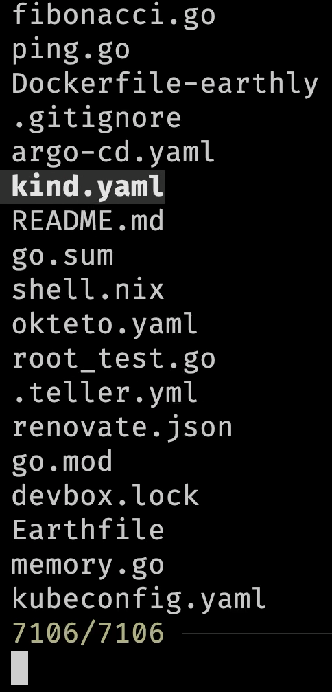

10 CLIs I Can Not Live Without!
Today we’ll explore ten CLI tools without which my life would be meaningless. Well… Maybe not meaningless, but certainly much less productive and harder.
So, without further ado, those are tend CLIs I use on a daily basis, and you should use them as well.
Setup
The setup and the demo is based on zsh. Some modifications might be needed for other shells.
git clone https://github.com/vfarcic/clis-demo
cd clis-demoWatch https://youtu.be/WiFLtcBvGMU if you are not familiar with Devbox. Alternatively, you can skip Devbox and install all the tools listed in
devbox.jsonyourself.
devbox shell
zoxide add $PWD
zoxide add $PWD/.devbox/bin
zoxide add $PWD/.devbox/gen
zoxide add $PWD/.devbox/gen/flake
zoxide add $PWD/.devbox/nix
devbox add kind@0.23.0
yq --inplace ".metadata.annotations.something = \"else\"" \
k8s/app.yamleza: ls Replacement
The first tool is eza which is, effectivelly, a replacement for the ls baked in all shells.
With ls, we can list files and directories in the current directory.
lsThe output is as follows.
Dockerfile-earthly cosign go.mod kind.yaml memory.go root.go timoni
Earthfile devbox.json go.sum kubeconfig.yaml okteto.yaml root_test.go tmp
README.md devbox.lock helm kustomize ping.go schemahero vendor
argo-cd.yaml fibonacci.go k8s main.go renovate.json shell.nix video.goHere’s the output of eza.
ezaThe output is as follows.
argo-cd.yaml devbox.lock fibonacci.go helm kubeconfig.yaml memory.go README.md root_test.go timoni video.go
cosign Dockerfile-earthly go.mod k8s kustomize okteto.yaml renovate.json schemahero tmp
devbox.json Earthfile go.sum kind.yaml main.go ping.go root.go shell.nix vendor I could not show colors in this blog post. I suggest you follow along in your terminal to see the output as they should be seen.
Now, that by itself might not be that impressive since the only notable difference is that eza output is colored. Actually, scratch that. Colors alone make it much easier to distinguish between different types of files and directories.
Nevertheless, there’s much much more eza offers.
We can, for example, display extended file metadata as a table and ensure that all files, including hidden ones, are listed.
eza --long --allThe output is as follows.
drwxr-xr-x - vfarcic 15 Jun 23:41 .git
.rw-r--r-- 449 vfarcic 15 Jun 23:41 argo-cd.yaml
drwxr-xr-x - vfarcic 15 Jun 23:41 cosign
.rw-r--r-- 419 vfarcic 15 Jun 23:41 devbox.json
.rw-r--r-- 23k vfarcic 15 Jun 23:41 devbox.lock
.rw-r--r-- 120 vfarcic 15 Jun 23:41 Dockerfile-earthly
.rw-r--r-- 2.3k vfarcic 15 Jun 23:41 Earthfile
.rw-r--r-- 543 vfarcic 15 Jun 23:41 fibonacci.go
.rw-r--r-- 1.8k vfarcic 15 Jun 23:41 go.mod
.rw-r--r-- 25k vfarcic 15 Jun 23:41 go.sum
drwxr-xr-x - vfarcic 15 Jun 23:41 helm
drwxr-xr-x - vfarcic 15 Jun 23:41 k8s
.rw-r--r-- 411 vfarcic 15 Jun 23:41 kind.yaml
.rw-r--r-- 2.8k vfarcic 15 Jun 23:41 kubeconfig.yaml
drwxr-xr-x - vfarcic 15 Jun 23:41 kustomize
.rw-r--r-- 1.1k vfarcic 15 Jun 23:41 main.go
.rw-r--r-- 1.5k vfarcic 15 Jun 23:41 memory.go
.rw-r--r-- 365 vfarcic 15 Jun 23:41 okteto.yaml
.rw-r--r-- 706 vfarcic 15 Jun 23:41 ping.go
.rw-r--r-- 772 vfarcic 15 Jun 23:41 README.md
.rw-r--r-- 175 vfarcic 15 Jun 23:41 renovate.json
.rw-r--r-- 708 vfarcic 15 Jun 23:41 root.go
.rw-r--r-- 1.9k vfarcic 15 Jun 23:41 root_test.go
drwxr-xr-x - vfarcic 15 Jun 23:41 schemahero
.rw-r--r-- 223 vfarcic 15 Jun 23:41 shell.nix
drwxr-xr-x - vfarcic 15 Jun 23:41 timoni
drwxr-xr-x - vfarcic 15 Jun 23:41 tmp
drwxr-xr-x - vfarcic 15 Jun 23:41 vendor
.rw-r--r-- 2.6k vfarcic 15 Jun 23:41 video.goThat’s still very similar to what we’d get if we’d execute ls -la but nicely colored. So, let’s spice it up a bit more by executing eza as we did before but by hiding permissions (--no-permissions), file sizes (--no-filesize), user (--no-user), and time (--no-time), and adding information from Git.
eza --long --all --no-permissions --no-filesize --no-user \
--no-time --gitThe output is as follows.
-- .devbox
-I .git
-- argo-cd.yaml
-- cosign
-M devbox.json
-M devbox.lock
-- Dockerfile-earthly
-- Earthfile
-- fibonacci.go
-- go.mod
-- go.sum
-- helm
-M k8s
-- kind.yaml
-- kubeconfig.yaml
-- kustomize
-- main.go
-- memory.go
-- okteto.yaml
-- ping.go
-- README.md
-- renovate.json
-- root.go
-- root_test.go
-- schemahero
-- shell.nix
-- timoni
-- tmp
-- vendor
-- video.goWe have a clean colored output with the files and directories and also Git statuses of each of them. We can easily see that devbox.json and devbox.lock are modified.
Eza has a massive number of parameters we can use to customize the output.
eza --helpI won’t go through all of them. That’s something you can explore on your own. The only thing I’ll add is that my brain is wired to type ls instead of eza and, if yours is as well, you might want to create an alias in .zshrc or .bashrc or whichever shell you’re using.
echo "alias ls='eza --long --all --no-permissions --no-filesize \
--no-user --no-time --git'" | tee -a ~/.zshrc
source ~/.zshrcAs a result, every time you execute ls as you would normally do, you’ll get a nicer and more useful default output.
lsThe output is as follows.
-- .devbox
-I .git
-- argo-cd.yaml
-- cosign
-M devbox.json
-M devbox.lock
-- Dockerfile-earthly
-- Earthfile
-- fibonacci.go
-- go.mod
-- go.sum
-- helm
-M k8s
-- kind.yaml
-- kubeconfig.yaml
-- kustomize
-- main.go
-- memory.go
-- okteto.yaml
-- ping.go
-- README.md
-- renovate.json
-- root.go
-- root_test.go
-- schemahero
-- shell.nix
-- timoni
-- tmp
-- vendor
-- video.goFrom there on, we can add additional arguments depending on what we’re trying to do like, for example, show all files and directories in a tree-like structure.
ls --treeThe output is as follows (truncated for brevity).
...
-- │ ├── gopkg.in
-- │ │ └── yaml.v3
-- │ │ ├── apic.go
-- │ │ ├── decode.go
-- │ │ ├── emitterc.go
-- │ │ ├── encode.go
-- │ │ ├── LICENSE
-- │ │ ├── NOTICE
-- │ │ ├── parserc.go
-- │ │ ├── readerc.go
-- │ │ ├── README.md
-- │ │ ├── resolve.go
-- │ │ ├── scannerc.go
-- │ │ ├── sorter.go
-- │ │ ├── writerc.go
-- │ │ ├── yaml.go
-- │ │ ├── yamlh.go
-- │ │ └── yamlprivateh.go
-- │ ├── mellium.im
-- │ │ └── sasl
-- │ │ ├── .gitignore
-- │ │ ├── CHANGELOG.md
-- │ │ ├── DCO
-- │ │ ├── doc.go
-- │ │ ├── LICENSE
-- │ │ ├── mechanism.go
-- │ │ ├── negotiator.go
-- │ │ ├── nonce.go
-- │ │ ├── options.go
-- │ │ ├── plain.go
-- │ │ ├── README.md
-- │ │ ├── scram.go
-- │ │ ├── xor.go
-- │ │ ├── xor_amd64.go
-- │ │ ├── xor_amd64.s
-- │ │ ├── xor_arm64.go
-- │ │ ├── xor_arm64.s
-- │ │ ├── xor_generic.go
-- │ │ ├── xor_go.go
-- │ │ ├── xor_ppc64x.go
-- │ │ └── xor_ppc64x.s
-- │ └── modules.txt
-- └── video.goThat was too much so let me limit the depth to two levels.
ls --tree --level 2The output is as follows (truncated for brevity).
...
-- ├── timoni
-- │ ├── cue.mod
-- │ ├── go.mod
-- │ ├── go.sum
-- │ ├── templates
-- │ ├── test_tool.cue
-- │ ├── test_values.cue
-- │ ├── timoni.cue
-- │ ├── timoni.ignore
-- │ ├── update-version.sh
-- │ ├── values-db-aws.yaml
-- │ ├── values-db-cnpg-otel.yaml
-- │ ├── values-db-cnpg.yaml
-- │ ├── values-db.yaml
-- │ ├── values-dev.yaml
-- │ ├── values-otel.yaml
-- │ ├── values.cue
-- │ └── values.yaml
-- ├── tmp
-- ├── vendor
-- │ ├── github.com
-- │ ├── golang.org
-- │ ├── google.golang.org
-- │ ├── gopkg.in
-- │ ├── mellium.im
-- │ └── modules.txt
-- └── video.goThat makes more sense. I can easily see up to two levels of files and directories in a tree-like structure.
Let’s move onto the second CLI.
bat: cat With Syntaz Highlighting
The next CLI is also a replacement of a familiar command.
If we want to output contents of a file, we execute cat.
cat k8s/app.yamlThe output is as follows (truncated for brevity).
...
apiVersion: networking.k8s.io/v1
kind: Ingress
metadata:
annotations:
description: This is a silly demo
language: Go
owner: Viktor Farcic (viktor@farcic.com)
team: dot
labels:
app.kubernetes.io/name: silly-demo
name: silly-demo
spec:
ingressClassName: traefik
rules:
- host: sillydemo.127.0.0.1.nip.io
http:
paths:
- backend:
service:
name: silly-demo
port:
number: 8080
path: /
pathType: ImplementationSpecific
---bat provides a similar functionality but with syntax highlightning, Git integration, and quite a few other things.
Here’s the output of the same YAML file.
bat k8s/app.yamlThe output is as follows (truncated for brevity).
───────┬─────────────────────────────────────────────────────────────────────────────────────────────────────────────────────────────────────────────────────────────────────────
│ File: k8s/app.yaml
───────┼─────────────────────────────────────────────────────────────────────────────────────────────────────────────────────────────────────────────────────────────────────────
1 │ apiVersion: apps/v1
2 │ kind: Deployment
3 _ │ metadata:
4 │ labels:
5 │ app.kubernetes.io/name: silly-demo
6 │ name: silly-demo
7 + │ annotations:
8 + │ something: else
9 │ spec:
10 │ replicas: 2
11 │ selector:
12 │ matchLabels:
13 │ app.kubernetes.io/name: silly-demo
14 │ template:
15 │ metadata:
16 │ labels:
17 │ app.kubernetes.io/name: silly-demo
18 │ spec:
19 │ shareProcessNamespace: true
20 │ containers:
21 ~ │ - image: ghcr.io/vfarcic/silly-demo:1.4.117
22 ~ │ livenessProbe:
23 ~ │ httpGet:
24 ~ │ path: /
25 ~ │ port: 8080
26 ~ │ name: silly-demo
27 ~ │ ports:
28 ~ │ - containerPort: 8080
───────┴─────────────────────────────────────────────────────────────────────────────────────────────────────────────────────────────────────────────────────────────────────────We can see that it is now colored, there are line numbers, and, as it’s the case of lines 7 and 8, we can see which ones changed when compared to what is in Git (_, +, and ~).
From here on, we can customize it by, for example, removing pagination (--paging never), and applying a theme (--theme DarkNeon) and a style (--style).
bat --paging never --theme DarkNeon --style plain k8s/app.yamlapiVersion: apps/v1
kind: Deployment
metadata:
labels:
app.kubernetes.io/name: silly-demo
name: silly-demo
annotations:
something: else
spec:
replicas: 2
selector:
matchLabels:
app.kubernetes.io/name: silly-demo
template:
metadata:
labels:
app.kubernetes.io/name: silly-demo
spec:
shareProcessNamespace: true
containers:
- image: ghcr.io/vfarcic/silly-demo:1.4.117
livenessProbe:
httpGet:
path: /
port: 8080
name: silly-demo
ports:
- containerPort: 8080Just as with eza, we can create an alias in .zshrc or .bashrc or whichever shell you’re using.
echo "alias cat='bat --paging never --theme DarkNeon \
--style plain'" | tee -a ~/.zshrc
source ~/.zshrcFrom now on, we can continue exercising our muscle memory by typing cat but getting a much nicer output.
cat main.goThe output is as follows (truncated for brevity).
package main
import (
"fmt"
"log"
"log/slog"
"net/http"
"os"
"github.com/gin-gonic/gin"
)
func main() {
log.SetOutput(os.Stderr)
if os.Getenv("DEBUG") == "true" {
slog.SetLogLoggerLevel(slog.LevelDebug)
}
if os.Getenv("MEMORY_LEAK_MAX_MEMORY") != "" {
go func() { memoryLeak(0, 0) }()
}
...
}
...We got a nicely formatted Go code. Brilliant!
Let’s move to the third CLI which, unlike the previous two, is not a replacement of an existing command but something completely different.
fzf: Command-Line Fuzzy Finder
fzf is a general-purpose command-line fuzzy finder. To explain it in simpler terms, it allows us to list and search files.
Here it goes.
fzfUse ↑ and ↓ to select a file. Type
yamlto narrow down the search. Selectkind.yamland press theenterkey to output it.
The output is the list of all files in the current directory and all subdirectories.
From here on, we can use arrows up and down to navigate through the list. We can also narrow down the output by typing a part of the file name.
So, if we type yaml, we’ll see only files that contain that string.
Once we find the file we’re interested in, we can press enter to output it.
We can also choose to select multiple files through the --multi argument.
fzf --multiUse tab to select multiple files. Press
enterto output them.
From here on, we can use tab to select any number of files and output them all by pressing enter.
Now, outputting one or more file names might not be that interesting. The power of fzf lies in combining it with other commands.
For example, we can use it with bat to preview the contents of the selected file.

fzf --preview 'bat --style numbers --color always {}'Use ↑ and ↓ to select a file and see the preview. Press
enterto output the name of the file.
Now we can navigate through the list of files and instantly preview any of them. Since that preview is done by bat, it is nicely colored and formatted.
Since it would be inpractical to try to remember such a long command, we should probably create an alias in .zshrc or .bashrc or whichever shell you’re using.
echo "alias fzfp='fzf --preview \"bat --style numbers \
--color always {}\"'" | tee -a ~/.zshrc
source ~/.zshrcNow we can preview files through the alias fzfp.
fzfpPress
enter.
zoxide: Smarter cd Command
The next in line is zoxide which is a better version of cd command. Actually, better would be an understatement. It is much much better than cd.
To use it, we’ll add zoxide init command to .zshrc or .bashrc or whichever shell you’re using.
It will, effectively, replace cd with zoxide.
echo 'eval "$(zoxide init --cmd cd zsh)"' | tee -a ~/.zshrc
source ~/.zshrcLet’s take a look at the files and, more importantly, the directories we have.
lsThe output is as follows.
-- .devbox
-I .git
-- argo-cd.yaml
-- cosign
-M devbox.json
-M devbox.lock
-- Dockerfile-earthly
-- Earthfile
-- fibonacci.go
-- go.mod
-- go.sum
-- helm
-M k8s
-- kind.yaml
-- kubeconfig.yaml
-- kustomize
-- main.go
-- memory.go
-- okteto.yaml
-- ping.go
-- README.md
-- renovate.json
-- root.go
-- root_test.go
-- schemahero
-- shell.nix
-- timoni
-- tmp
-- vendor
-- video.goNow, let’s say that we’d like to go to the flake directory which is inside the gen directory which is inside .devbox. Typically, we would need to execute something like cd .devbox/gen/flake.
With zoxide, which is now replacing cd, we can do it by simply telling it to cd to flake.
cd flakeBased on our navigation history, it figured out that we want to go to .devbox/gen/flake and executed the equivalent of cd .devbox/gen/flake. We are now three directories deep without having to type a single slash.
Now, let’s say that we’d like to go back to the clis-demo directory which is three lavels below the current directory. Instead of typing cd ../../../, we can simply tell zoxide to go to lis, press the space key, and then tab to autocomplete.
cd lis Make sure that there is space at the end. Press
tabto autocomplete.
It figured out that lis is the substring of clis-demo and took us there.
In cases there are multiple directories in the history that contain the same substring it would give us the list of all those that match the substring and let us choose where to go.
zoxide alone saves a lot of time. I stopped thinking where is what since all I have to do is type a few letters of the directory I want to go and zoxide takes me there no matter where that directory is, as long as I visited it at least once before.
The Fuck: Error Corrections
To demonstrate the next command, we will first create a KinD cluster.
kid create clusterThe output is as follows.
zsh: command not found: kidFuck! That’s the word I would utter every time I make a mistake like that. I typed kid instead of kind.
Here’s the thing. Instead of yelling fuck! before typing the command again, we can just type fuck.
fuckPress ↑ and ↓ to change suggestions. Press
enterafter seleting thekindcommand.
The output is as follows.
✗ fuck
kind create cluster [enter/↑/↓/ctrl+c]Fuck gives us what would normally come after yelling “Fuck!” It gives us a list of suggestions which command we should have executed instead.
More often than not, the first suggested command is the correct one, but, if it’s not, we can see other suggestions by pressing arrow keys up and down. Once we find the command we should have executed, all the have to do is press the enter key.
jq: sed for Json
Commands we execute often output Json, YAML, TOML, or some other format. If those would be files, we would format them with bat but, unfortunately, bat tends to have difficulties working with output since it uses file extensions to figure out what to display. More over, we often need not only to format but also filter outputs.
Here’s an example.
kubectl get namespace kube-system --output jsonThe output is as follows.
{
"apiVersion": "v1",
"kind": "Namespace",
"metadata": {
"creationTimestamp": "2024-06-09T01:21:20Z",
"labels": {
"kubernetes.io/metadata.name": "kube-system"
},
"name": "kube-system",
"resourceVersion": "5",
"uid": "6f178028-fda4-41d9-a2c9-0ad5b8fe6803"
},
"spec": {
"finalizers": [
"kubernetes"
]
},
"status": {
"phase": "Active"
}
}While that output is correct, there is no syntax highlighting. On top of that, many commands do not provide a way to filter outputs while those that do, like kubectl, often use some silly syntax that is hard to remember.
That’s where jq comes into play, at least when Json is concerned.
We can, for example, take the previous command, and pipe the output to jq to format it.
kubectl get namespace kube-system --output json | jq .The output is as follows.
{
"apiVersion": "v1",
"kind": "Namespace",
"metadata": {
"creationTimestamp": "2024-06-09T01:21:20Z",
"labels": {
"kubernetes.io/metadata.name": "kube-system"
},
"name": "kube-system",
"resourceVersion": "5",
"uid": "6f178028-fda4-41d9-a2c9-0ad5b8fe6803"
},
"spec": {
"finalizers": [
"kubernetes"
]
},
"status": {
"phase": "Active"
}
}That is much easier to read.
We can also filter the output to, let’s say, retrieve the .status.phase field.
kubectl get namespace kube-system --output json \
| jq ".status.phase"The output is as follows.
"Active"yq: Like jq But For YAML
The next in line is yq which is just like jq but for YAML. Even the syntax is almost the same so we can, for example, output namespaces to yaml and pipe it to yq to format it.
kubectl get namespace kube-system --output yaml \
| yq .The output is as follows.
apiVersion: v1
kind: Namespace
metadata:
creationTimestamp: "2024-06-09T01:21:20Z"
labels:
kubernetes.io/metadata.name: kube-system
name: kube-system
resourceVersion: "5"
uid: 6f178028-fda4-41d9-a2c9-0ad5b8fe6803
spec:
finalizers:
- kubernetes
status:
phase: ActiveSimilarly, we can also use it to filter the output so that, for example, only the .status.phase field is returned.
kubectl get namespace kube-system --output yaml \
| yq ".status.phase"The output is as follows.
ActiveOne notable difference is that yq is not limited only to YAML. We can, for example, use json as input and yaml as output.
kubectl get namespace kube-system --output json \
| yq --input-format jsonThe output is as follows.
apiVersion: v1
kind: Namespace
metadata:
creationTimestamp: "2024-06-09T01:21:20Z"
labels:
kubernetes.io/metadata.name: kube-system
name: kube-system
resourceVersion: "5"
uid: 6f178028-fda4-41d9-a2c9-0ad5b8fe6803
spec:
finalizers:
- kubernetes
status:
phase: ActiveSimilarly, we can take YAML as input and output formatted JSON.
kubectl get namespace kube-system --output yaml \
| yq --output-format json .The output is as follows.
{
"apiVersion": "v1",
"kind": "Namespace",
"metadata": {
"creationTimestamp": "2024-06-09T01:21:20Z",
"labels": {
"kubernetes.io/metadata.name": "kube-system"
},
"name": "kube-system",
"resourceVersion": "5",
"uid": "6f178028-fda4-41d9-a2c9-0ad5b8fe6803"
},
"spec": {
"finalizers": [
"kubernetes"
]
},
"status": {
"phase": "Active"
}
}Effectively, yq is like jq but for YAML, but it can also replace jq since it can work with JSON as well. That means that we do not necessarily need jq. Nevertheless, I tend to use both. jq for JSON and yq for YAML. I’m aware that there is no need to jq but I’m so used to it that I keep using it.
Teller: Universal Secrets Manager
Then there is Teller. It is a universal secrets manager. I use it with almost every project I work in. If I need credentials for Kubernetes, or Azure, or AWS, or Google, or OpenAI, or GitHub tokens, or anything else, I add .teller.yml file to the project and in that file I point to whichever secrets store I use.
Here’s an example.
cat .teller.ymlThe output is as follows.
project: dot
providers:
google_secretmanager:
env:
AZURE_OPENAI_API_VERSION:
path: projects/vfarcic/secrets/azure-openai-api-version/versions/1
AZURE_OPENAI_ENDPOINT:
path: projects/vfarcic/secrets/azure-openai-endpoint/versions/2
AZURE_OPENAI_API_KEY:
path: projects/vfarcic/secrets/azure-openai-key/versions/2
AZURE_OPENAI_MODEL:
path: projects/vfarcic/secrets/azure-openai-model/versions/2
YOUTUBE_API_KEY:
path: projects/vfarcic/secrets/youtube-api-key/versions/1Over there I specified that the azure-openai-api-version secret stored in my Google Secret Manager should be used as the AZURE_OPENAI_API_VERSION environment variable. The same goes for azure-openai-endpoint, azure-openai-key, azure-openai-model, and youtube-api-key.
Actually, Teller is so convenient that I do not use it only for secrets but for any kind of environment variables, no matter whether they contain confidential values or not.
That file can be safely stored in Git and live side-by-side with the rest of the project. I or anyone else working with me on that project can instantly get all those credentials, as long as they have the access to that secrets store.
From there on, there are many different formats we can use to output those secrets.
For example, we can output them as environment variables which, in this case, I’ll pipe to teller redact so that you don’t see them. I like you, especially if you subscribed, but I do not yet trust you.
teller env | teller redactIf you’re following along by executing commands, you’ll notice that
tellerwill be failing because it’s configured to use my Google Cloud Secret Manager. You’ll have to make changes to.teller.ymlto make it work with whichever Secret Storage you might be using.
The output is as follows.
YOUTUBE_API_KEY=**REDACTED**
AZURE_OPENAI_MODEL=**REDACTED**
AZURE_OPENAI_ENDPOINT=**REDACTED**
AZURE_OPENAI_API_VERSION=**REDACTED**
AZURE_OPENAI_API_KEY=**REDACTED**We can redirect the output to a configuration file like the one I use for Fabric.
teller env >.fabricWe can use it to scan the source code for secrets.
teller scanThe output is as follows.
[high] .fabric (1,16): found match for google_secretmanager/YOUTUBE_API_KEY (AI*****)
[high] .fabric (2,19): found match for google_secretmanager/AZURE_OPENAI_MODEL (gp*****)
[high] .fabric (3,22): found match for google_secretmanager/AZURE_OPENAI_ENDPOINT (ht*****)
[high] .fabric (4,25): found match for google_secretmanager/AZURE_OPENAI_API_VERSION (20*****)
[high] .fabric (5,21): found match for google_secretmanager/AZURE_OPENAI_API_KEY (fe*****)It’s clear that .fabric contains secrets and that I should not push it to git so I should either remove it or add it to .gitignore.
Teller is simple, yet it has quite a few different features that are very handy when working with confidential information either locally or in CI/CD pipelines.
If you’re interested in it, you might want to check the Secrets Made My Life Miserable - Consume Secrets Easily With Teller video for more details.
GitHub CLI (gh): GitHub To Your Terminal
The next in line is GitHub CLI or gh.
Even if you are using GitLab or if you are very unfortunate to be stuck with BitBucket, you still need to interact with GitHub, at least when working with open source projects. GitHub is part of everyone’s life, whether we like it or not.
GitHub CLI is mostly focused on features and capabilities missing in Git.
For example, if we would like to fork a repository, instead of opening GitHub in a web browser and start clicking buttons, we can simply execute gh repo fork command,…
gh repo fork vfarcic/dotfiles --clone --remote…and enter the clone of that repo.
cd dotfilesIf we would like to set the fork as the default remote repository, we can do that with gh repo set-default.
gh repo set-defaultIf we are nostalgic and would like to see the repository in a web browser, we can do that with gh repo view.
gh repo view --webGitHub CLI is full of features. We can use it to create and manage pull requests, issues, and many other things. It’s a must-have for anyone working with GitHub which, effectively, means everyone.
Please watch GitHub CLI (gh) - How to manage repositories more efficiently if you’d like more details about it.
Let’s go back before we move onto the next CLI.
cd ..Devbox: Isolated Shells
The last CLI I’d like to show you is Devbox. It is a tool we can use to create isolated shells or isolated environments. It is a wrapper around Nix Shell that makes it more user-friendly and easier to use. It is, potentially, the most important tool in my toolbox.
We are in a Devbox environment right now. We can see that by taking a look at teller CLI we explored a few minutes ago.
which tellerThe output is as follows.
/Users/vfarcic/code/clis-demo/.devbox/nix/profile/default/bin/tellerWe can see that it is not a tool installed permanently on my machine but a tool that was installed specifically for this demo project. As a matter of fact, I do not have Teller on my machine at all. I have it only in this isolated environment.
I can prove that by going out of the Devbox Shell,…
exit…and trying to locate teller again.
which tellerThe output is as follows.
teller not foundIt’s nowhere to be found. It does not exist on my machine permanently but only in environments I create with Devbox.
Let’s start a new Devbox Shell,…
devbox shell…and try to locate teller again.
which tellerThe output is as follows.
/Users/vfarcic/code/clis-demo/.devbox/nix/profile/default/bin/tellerNow it’s back.
Devbox allows me to specify all the tools I need for each individual project I work on and create isolated environments for each of them. That way, I can have different versions of the same tool in different projects without any conflicts. Also, anyone working with me on that project will have those tools as well.
All we have to do is specify the tools we need in devbox.json file.
cat devbox.jsonThe output is as follows.
{
"$schema": "https://raw.githubusercontent.com/jetify-com/devbox/0.11.1/.schema/devbox.schema.json",
"packages": [
"eza@0.18.17",
"bat@0.24.0",
"fzf@0.53.0",
"zoxide@0.9.4",
"thefuck@3.32",
"jq@1.7.1",
"yq-go@4.44.1",
"teller@1.5.6",
"gh@2.50.0",
"gum@0.14.1",
"kind@0.23.0"
],
"shell": {
"init_hook": [],
"scripts": {}
}
}If you’d like to explore Devbox in more depth, please watch the Nix for Everyone: Unleash Devbox for Simplified Development video.
Those are the ten must-have CLIs I use on daily basis. Which CLIs are your favorites? Please let me know in the comments. I’d love to know what you’re using and what I might be missing.
Thank you for watching. See you in the next one. Cheers.
Destroy
git stash
kind delete cluster
exit